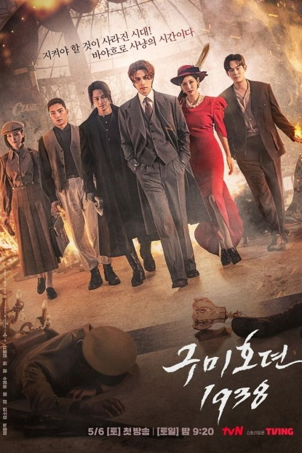
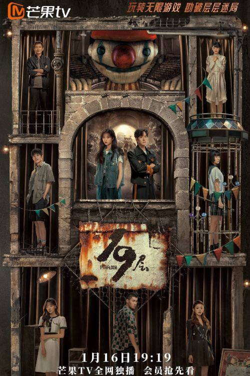

Сказание о Кумихо

Жанр: Драма, мелодрама, триллер, фэнтези, романтика
Страна: Южная Корея
Премьера: 7 октября 2020
Кол-во серий: 16
В ролях: Ли Дон УК, Ким Сан Бом, Чо Бо А, Ким Ён Чжи, Хван Хи, Ким Чон Нан и др.
Описание: Кумихо И Ён (Ли Дон Ук) являлся живым божеством горного хребта горы Пэкду, но затем получил должность передаточного звена между миром живых людей и потусторонним миром. Его главная задача — навести порядок среди тех, кто нарушает мир живых, прячась за маской сказок о призраках. В людском облике он может похвастаться потрясающей внешностью, интеллектом и великолепными спортивными способностями, но при этом слишком самоуверен и временами может быть жестоким. На его пути встречается амбициозный режиссер-продюсер Нам Чжи А (Чо Бо А), которая совершенно бесстрашна, когда дело доходит до создания уникального контента. Сводный брат И Ёна, И Ран (Ким Бом) — самый опасный кумихо, который питает глубокое презрение к людям, несмотря на то, что живет среди них. Иногда он соблазняет людей, обещая исполнять их желания, за что в конечном итоге они платят огромную цену.
Сказание о Кумихо 2
Жанр: Исторические, ужасы, фантастика, романтика
Страна: Южная Корея
Премьера: 6 мая 2023
Кол-во серий: 12
В ролях: Ли Дон УК, Ким Сан Бом, Ким Со Ён, Рю Кён Су, Хван Хи, Ким Чон Нан и др.
Описание: Действие второго сезона дорамы "Сказание о Кумихо" разворачивается во время японской колониальной оккупации (1910-1945), и расскажет историю о том, как Ли Ён стал горным богом, а так же поведает предысторию Ли Рана. Ли Ён (Ли Дон Ук) оказывается вовлеченным в неожиданное дело, которое заставляет его отправиться в прошлое, в 1938 год, в эпоху хаоса, где он вновь встречает Ли Рана (Ким Бом). Вернувшись в прошлое, его путь пересекается с Рю Хон Джу (Ким Со Ён). Когда-то она была духом-хранителем западных гор, но в 1938 году владеет лучшим элитным рестораном Myoyeongak в столице Кёнсон. Когда Хон Джу впервые встретила Ли Ёна, она была очарована им, но не могла показать свою симпатию. Между тем, Чхон Му Ён (Рю Гён Су) - доктор, который может спасти даже мертвых. Раньше он был духом-хранителем восточных гор и дружил с Ли Ён и Рю Хон Джу, но теперь настроен враждебно по отношению к ним. Ли Ён вынужден отчаянно бороться за то, чтобы вернуться в настоящее, где находятся все дорогие ему люди.
Сказание о Кумихо: незаконченная история
Жанр: Мелодрама, триллер, фэнтэзи, научная фантастика
Страна: Южная Корея
Премьера:18 ноября 2020
Кол-во серий: 3
В ролях: Ким Сан Бом, Ким Ён Чжи, Хван Хи, Чон Си Юль, Ли Чжу Вон, Ю Су Бин, Ким Ын Су и др.
Описание: Три отдельные истории из жизни лиса Ли Рана, сводного брата Ли Ёна.
101 способ жениться
Жанр: Романтика
Страна: Китай
Премьера: 17 марта 2023
Кол-во серий: 24
В ролях: Чжан Цзя Вэй, Чэн Шу Цзюнь, Чан Чжэ Куань, У Цзюнь Чао, Фэн Чу Сюань, Лю Дэ Си и др.
Описание: Шэн Ши (Цзинь Цзэ), богатый наследник Shengshi Group, еще с колледжа влюблен в Гу Ланьшэнь (Чэнь Шуцзюнь). Но ей всегда нравился другой парень - Хань Чэнчи (Фэн Чусюань). Самоуверенный и гордый Шэн Ши не принял этот факт. Он хочет жениться на любимой девушке и не останавливается ни перед чем. Но Гу Ланьшань узнает обо всех уловках Шэн Ши и, считая, что он предал дружбу между ними, пытается сбежать в день свадьбы. По одноименному вэб-роману Ye Fei Ye (叶非夜)
12 ночей
Жанр: Романтика, драма
Страна: Южная Корея
Премьера: 12 октября 2018
Кол-во серий: 12
В ролях: Хан Сы Ён, Син Хён Су, Ким Гю Ри, Хван Со Хи, Чан Хён Сон, Йе Су Чжон и др.
Описание: Дорама о путешествии мужчины и женщины, которые вместе проводят 12 ночей в трех поездках.
109 странных вещей

Жанр: Драма, комедия, романтика, научная фантастика
Страна: Южная Корея
Премьера: 1 февраля 2017
Кол-во серий: 6
В ролях: Чхве Тэ Джун, Чон Чхэ Ён, Чо И Хён, Ким Тхэ Юн, Ли Хён Сок и др.
Описание: KDI-109 — робот. Он прибыл из 2050 года для поддержки и защиты дочери своего создателя. Шин Ки Вон — студентка на философском факультете. За плечами у неё 29 собеседований и все она провалила т.к. гуманитарии не пользуются в компаниях успехом. Девушка находится в полном отчаянье, когда неожиданно во дворе возле её дома совершает посадку робот из будущего. Говорит, что будет её защищать. А ещё KDI-109 знает множество кулинарных рецептов и ездит на велосипеде со скоростью звука. Робот утверждает, что не испытывает чувств и эмоций, но Ки Вон так не кажется.
14-ти летняя мама

Жанр: Драма, семейные
Страна: Япония
Премьера: 11 октября 2006
Кол-во серий: 11
В ролях: Шида Мираи, Миура Харума, Танака Мисако, Намасэ Кацухиса, Мурой Сигэру, Ямагути Саяка, Койкэ Рина и др.
Описание: Итиносе Мики беременна в свои четырнадцать лет. Это стало неожиданностью для всех вокруг, и ей сложно будет вернуть прежнюю жизнь. Сделать ли аборт и забыть всё как сон? Или родить малыша, отказавшись от всего - школы, друзей, мечты? Как преодолеть все страхи и непонимание со стороны окружающих? Мики и Кирино и их семьям придётся нелегко, но любовь поможет преодолеть все препятствия на пути к счастью.
18 против 29
Жанр: Романтика, драма, комедия
Страна: Южная Корея
Премьера: 7 марта 2005
Кол-во серий: 16
В ролях: Пак Сон Ён, Рю Су Ён, Пак Ын Хе, Ли Хан Ви, Ли Сан У, Чон Да Хе и др.
Описание: Главной героине Ю Хе Чан 29 лет. Она замужем за бывшим однокласником, а нынче известным актером, Кан Пон Маном. История открывается ее решением получить развод из-за измены мужа. По пути к зданию суда Ю Хе Чан попадает в автокатострофу и теряет память. Очнувшись в больнице, она думает, что ей 18 лет.
19 этаж
Жанр: Приключение, триллер, фантастика, саспенс
Страна: Китай
Премьера: 16 января 2024
Кол-во серий: 30
В ролях: Сунь Цянь, Вэй Чжэ Мин, Бай Шу, Ван Жо Шань, Ло Юй Тун, Пан Юэ Тун и др.
Описание: Студентка Чун Ю оказывается вовлечена в игру под названием «19-й этаж». Вместе с другими участниками игры ей предстоит сбежать из «призрачного здания», полного теней, и заброшенной деревни, населенной куклами-марионетками. Те, кто не выполнит задания игры на разных этапах, впадают в кому в реальности. Чтобы выжить и вернуться домой, Чун Ю нужно выяснить причину, по которой они все попали в игру. Адаптировано из романа Цай Цзюня «Девятнадцатый этаж ада» (地狱的第十九层)
18/40
Жанр: Романтика, драма, повседневность
Страна: Япония
Премьера: 11 июля 2023
Кол-во серий: 10
В ролях: Фукухара Харука, Фукада Кёко, Судзука Одзи, Уэсуги Сюхэй, Дэгути Нацуки, Яги Юсэй и др.
Описание: 18-летняя Накагава Арису учится в старшей школе. Когда ей было 11 лет, умерла её мать. С тех пор Арису живёт с отцом, который работает пожарным. Под влиянием матери девушка мечтает стать куратором в художественной галерее, но жизнь меняется, когда она узнаёт, что беременна. Тем временем Нарусе Токо скоро исполнится 40 лет. Она работает в мире искусства, находясь на стыке между искусством и бизнесом. Токо предана своей работе и уже 10 лет не состоит в романтических отношениях. Однажды они встречаются, и эта встреча меняет их жизнь.
11

Жанр:Рромантика, драма
Страна: Южная Корея
Премьера: 12 октября 2018
Кол-во серий: 12
В ролях: и др.
Описание: